Portofoliu CDL
Cazuri, texturi si directii de lucru.
Imaginile au rol de prezentare a activitatii laboratorului. Rezultatul clinic poate varia in functie de particularitatile fiecarui caz.
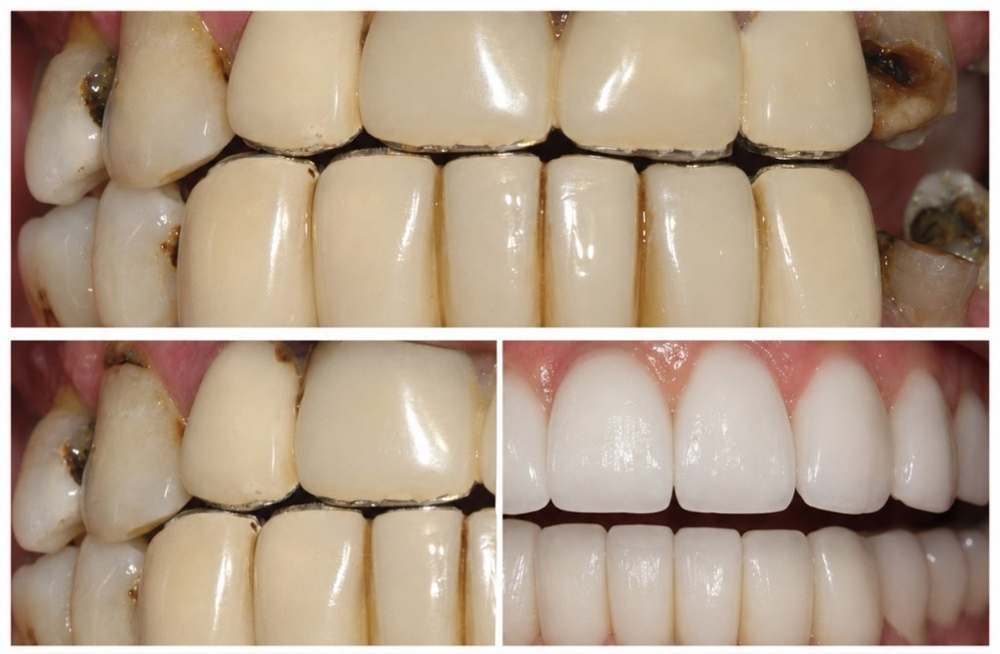

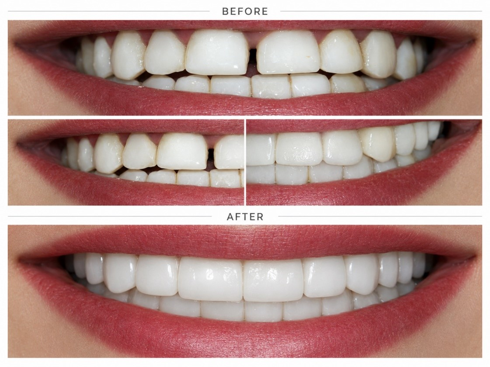
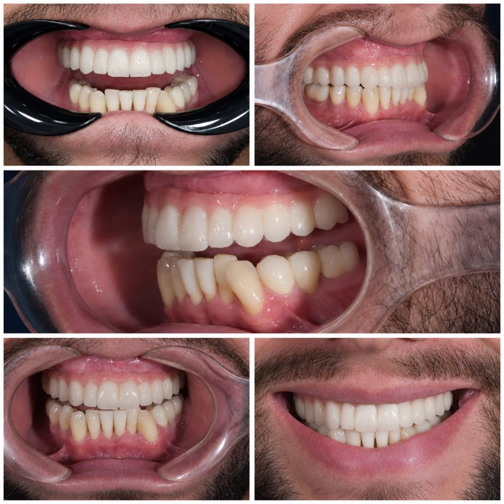
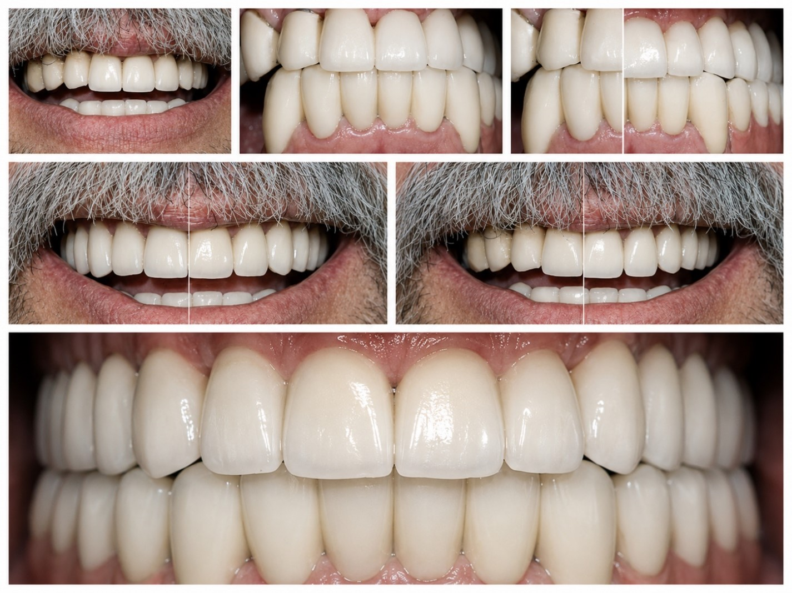

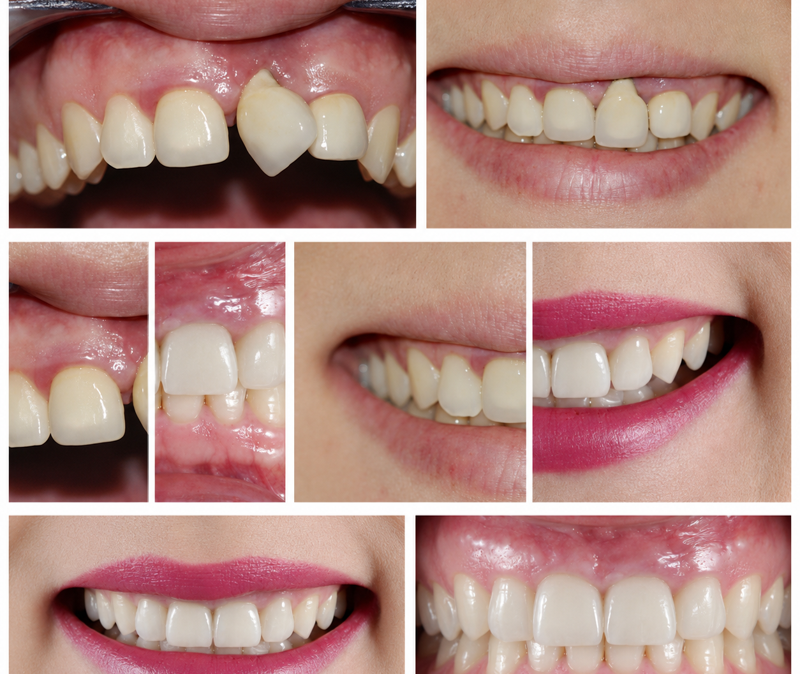
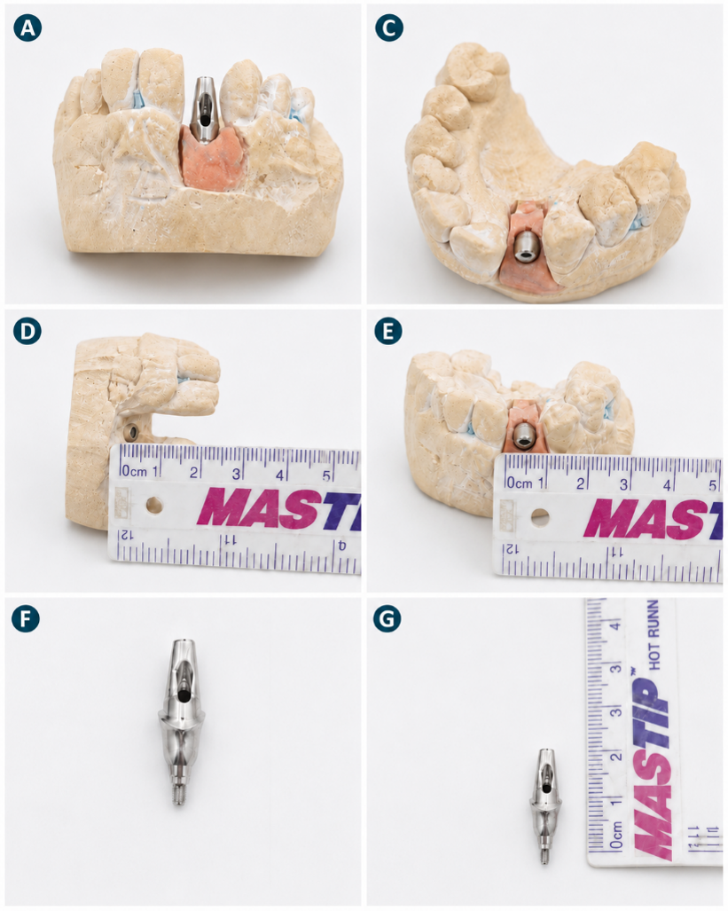
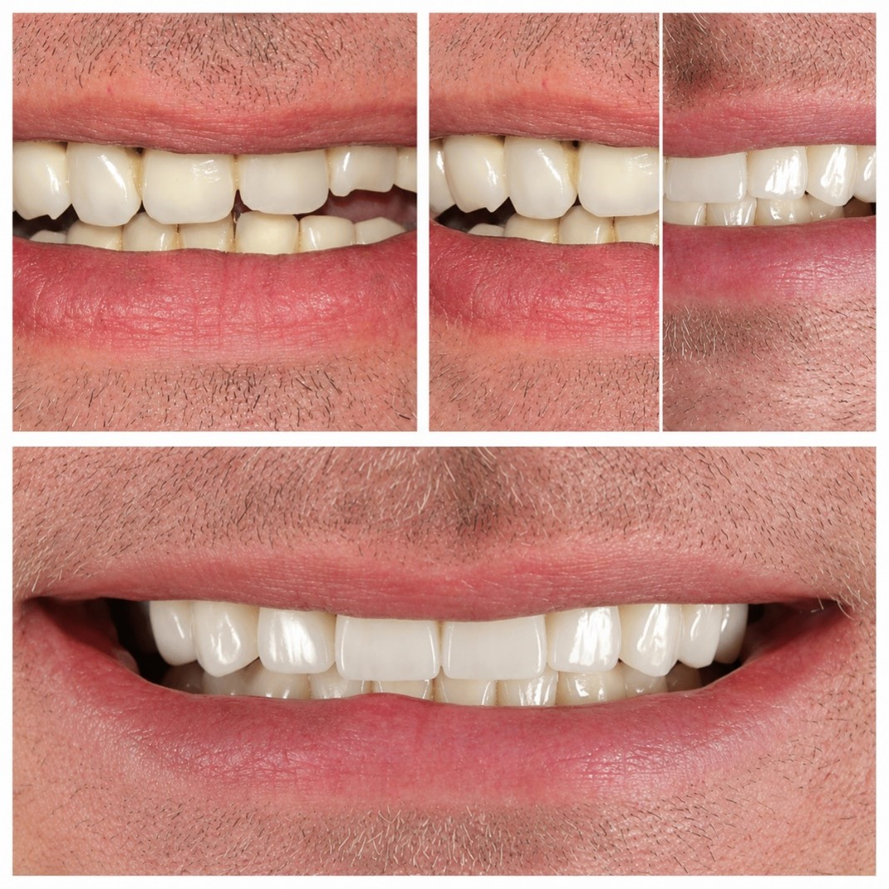
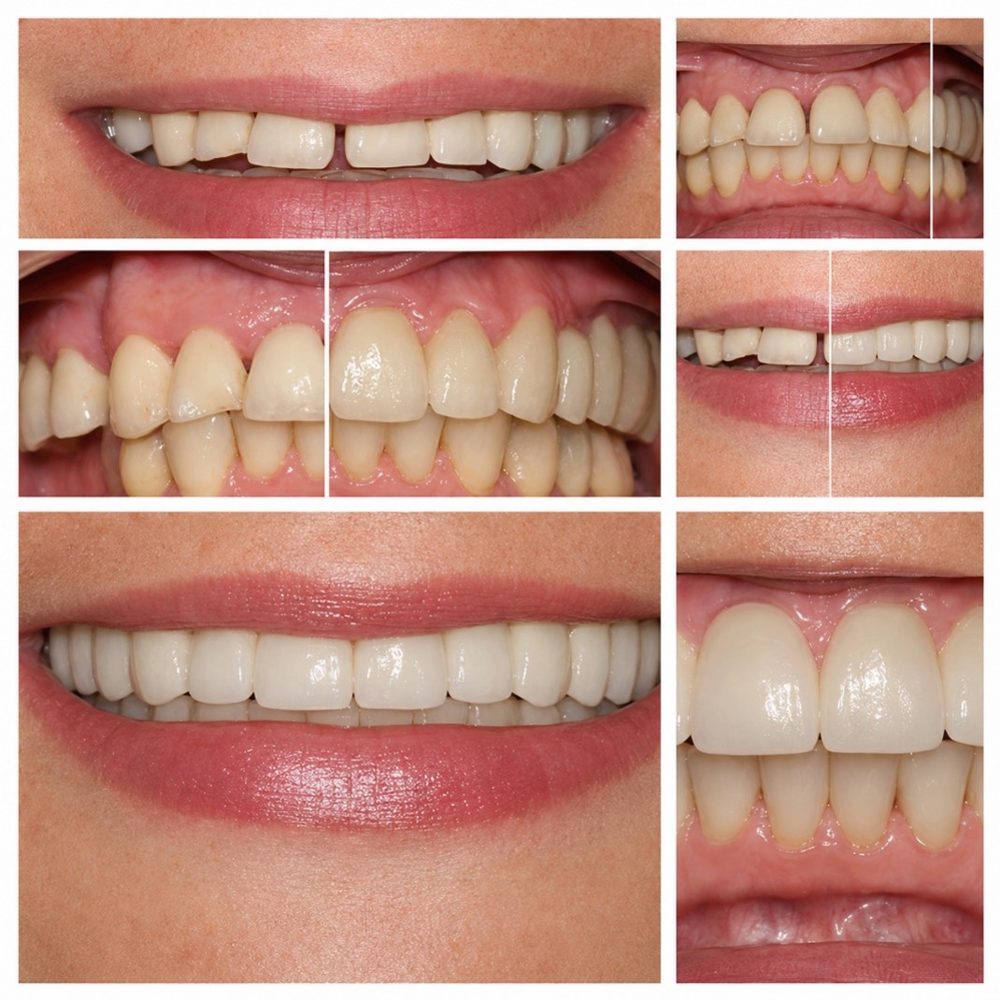
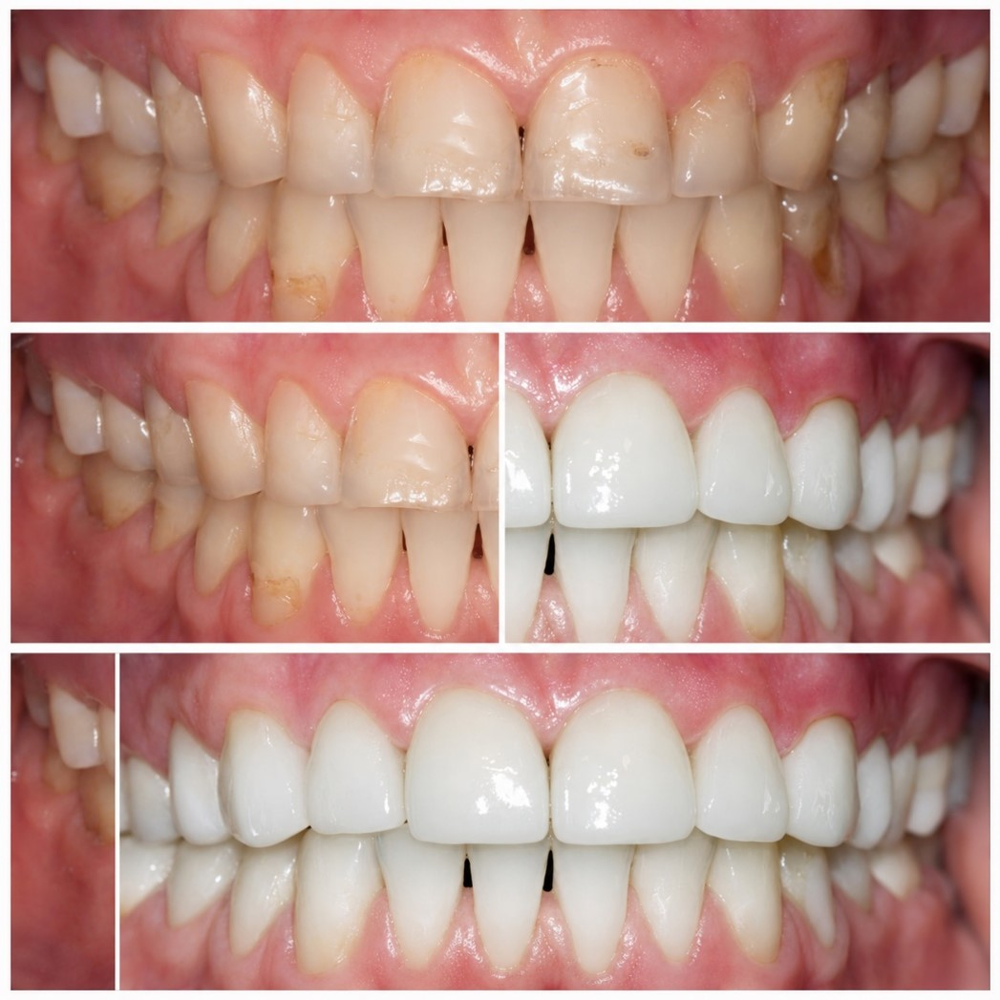
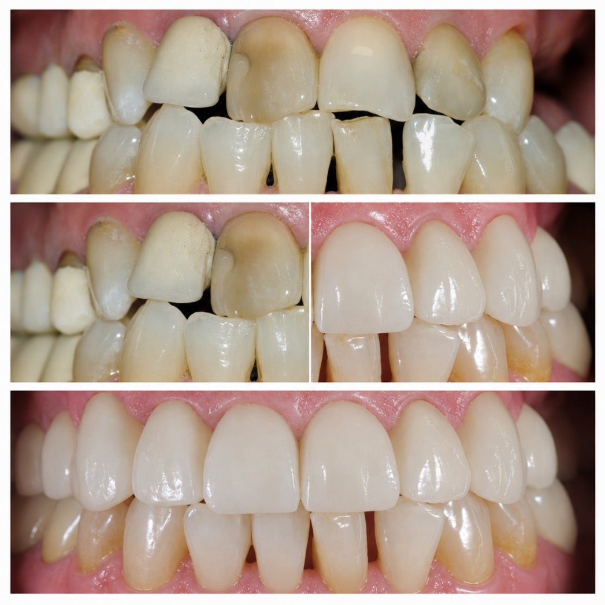
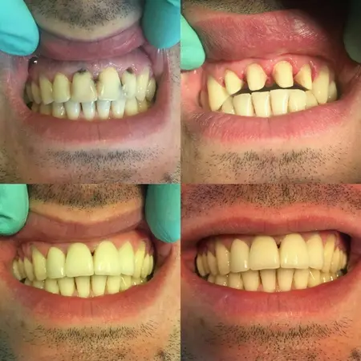
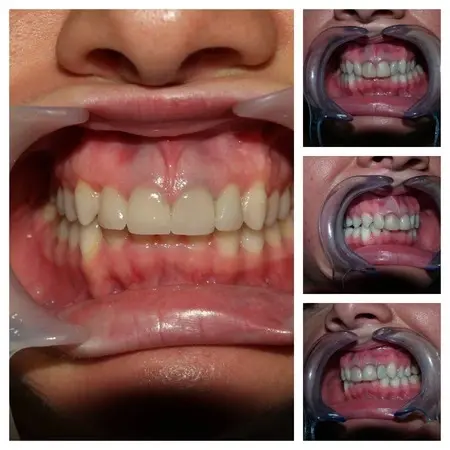
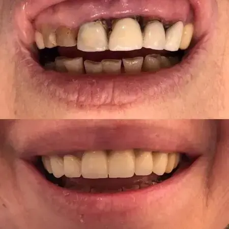
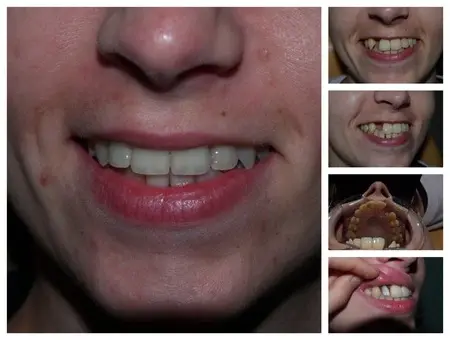
Ai un caz asemanator?